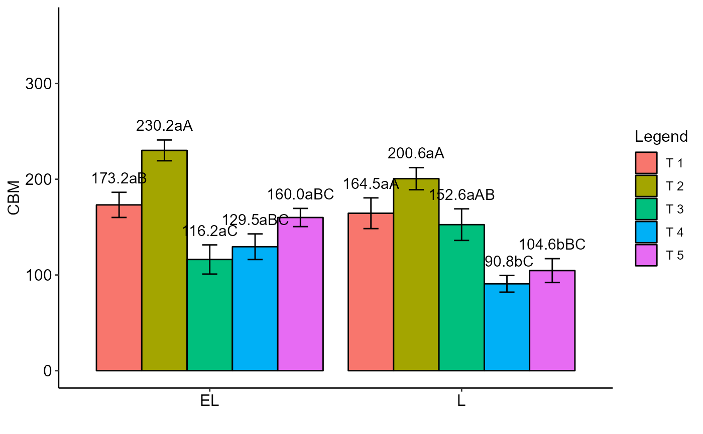

PSUBDBC.RdAnalysis of an experiment conducted in a randomized block design in a split-plot scheme using fixed effects analysis of variance.
PSUBDBC(
f1,
f2,
block,
response,
norm = "sw",
alpha.f = 0.05,
alpha.t = 0.05,
quali = c(TRUE, TRUE),
mcomp = "tukey",
grau = c(NA, NA),
grau12 = NA,
grau21 = NA,
transf = 1,
constant = 0,
geom = "bar",
theme = theme_classic(),
ylab = "Response",
xlab = "",
xlab.factor = c("F1", "F2"),
color = "rainbow",
textsize = 12,
labelsize = 4,
dec = 3,
legend = "Legend",
errorbar = TRUE,
addmean = TRUE,
ylim = NA,
point = "mean_se",
fill = "lightblue",
angle = 0,
family = "sans",
posi = "right",
angle.label = 0
)Numeric or complex vector with plot levels
Numeric or complex vector with subplot levels
Numeric or complex vector with blocks
Numeric vector with responses
Error normality test (default is Shapiro-Wilk)
Level of significance of the F test (default is 0.05)
Significance level of the multiple comparison test (default is 0.05)
Defines whether the factor is quantitative or qualitative (qualitative)
Multiple comparison test (Tukey (default), LSD, Scott-Knott and Duncan)
Polynomial degree in case of quantitative factor (default is 1). Provide a vector with three elements.
Polynomial degree in case of quantitative factor (default is 1). Provide a vector with n levels of factor 2, in the case of interaction f1 x f2 and qualitative factor 2 and quantitative factor 1.
Polynomial degree in case of quantitative factor (default is 1). Provide a vector with n levels of factor 1, in the case of interaction f1 x f2 and qualitative factor 1 and quantitative factor 2.
Applies data transformation (default is 1; for log consider 0)
Add a constant for transformation (enter value)
Graph type (columns or segments (For simple effect only))
ggplot2 theme (default is theme_classic())
Variable response name (Accepts the expression() function)
Treatments name (Accepts the expression() function)
Provide a vector with two observations referring to the x-axis name of factors 1 and 2, respectively, when there is an isolated effect of the factors. This argument uses `parse`.
When the columns are different colors (Set fill-in argument as "trat")
Font size (default is 12)
Font size (default is 4)
Number of cells (default is 3)
Legend title name
Plot the standard deviation bar on the graph (In the case of a segment and column graph) - default is TRUE
Plot the average value on the graph (default is TRUE)
y-axis limit
This function defines whether the point must have all points ("all"), mean ("mean"), standard deviation (default - "mean_sd") or mean with standard error ("mean_se") if quali= FALSE. For quali=TRUE, `mean_sd` and `mean_se` change which information will be displayed in the error bar.
Defines chart color (to generate different colors for different treatments, define fill = "trat")
x-axis scale text rotation
Font family (default is sans)
Legend position
Label angle
The table of analysis of variance, the test of normality of errors (Shapiro-Wilk, Lilliefors, Anderson-Darling, Cramer-von Mises, Pearson and Shapiro-Francia), the test of homogeneity of variances (Bartlett), the test of multiple comparisons (Tukey, LSD, Scott-Knott or Duncan) or adjustment of regression models up to grade 3 polynomial, in the case of quantitative treatments. The column chart for qualitative treatments is also returned. The function also returns a standardized residual plot.
The order of the chart follows the alphabetical pattern. Please use `scale_x_discrete` from package ggplot2, `limits` argument to reorder x-axis. The bars of the column and segment graphs are standard deviation.
In the final output when transformation (transf argument) is different from 1, the columns resp and respo in the mean test are returned, indicating transformed and non-transformed mean, respectively.
Principles and procedures of statistics a biometrical approach Steel, Torry and Dickey. Third Edition 1997
Multiple comparisons theory and methods. Departament of statistics the Ohio State University. USA, 1996. Jason C. Hsu. Chapman Hall/CRC.
Practical Nonparametrics Statistics. W.J. Conover, 1999
Ramalho M.A.P., Ferreira D.F., Oliveira A.C. 2000. Experimentacao em Genetica e Melhoramento de Plantas. Editora UFLA.
Scott R.J., Knott M. 1974. A cluster analysis method for grouping mans in the analysis of variance. Biometrics, 30, 507-512.
#==============================
# Example tomate
#==============================
library(AgroR)
data(tomate)
with(tomate, PSUBDBC(parc, subp, bloco, resp, ylab="Dry mass (g)"))
#> boundary (singular) fit: see help('isSingular')
#>
#> -----------------------------------------------------------------
#> Normality of errors
#> -----------------------------------------------------------------
#> Method Statistic p.value
#> Shapiro-Wilk normality test(W) 0.959285 0.004550077
#>
#> As the calculated p-value is less than the 5% significance level, H0 is rejected. Therefore, errors do not follow a normal distribution
#>
#>
#> -----------------------------------------------------------------
#> Homogeneity of Variances
#> -----------------------------------------------------------------
#> Plot
#> Method Statistic p.value
#> Bartlett test(Bartlett's K-squared) 7.024669 0.2188121
#>
#> As the calculated p-value is greater than the 5% significance level, hypothesis H0 is not rejected. Therefore, the variances can be considered homogeneous
#>
#> ----------------------------------------------------
#> Split-plot
#> Method Statistic p.value
#> Bartlett test(Bartlett's K-squared) 6.098779 0.1069021
#>
#> As the calculated p-value is greater than the 5% significance level, hypothesis H0 is not rejected. Therefore, the variances can be considered homogeneous
#>
#> ----------------------------------------------------
#> Interaction
#> Method Statistic p.value
#> Bartlett test(Bartlett's K-squared) 35.50227 0.04633559
#>
#> As the calculated p-value is less than the 5% significance level, H0 is rejected. Therefore, the variances are not homogeneous
#>
#> -----------------------------------------------------------------
#> Additional Information
#> -----------------------------------------------------------------
#>
#> CV1 (%) = 9.91
#> CV2 (%) = 4.55
#> Mean = 0.2433
#> Median = 0.2402
#>
#> -----------------------------------------------------------------
#> Analysis of Variance
#> -----------------------------------------------------------------
#> Df Sum Sq Mean Sq F value Pr(>F)
#> F1 5 0.012779159 0.0025558319 4.396538 0.012
#> Block 3 0.003406148 0.0011353827 1.953084 0.164
#> Error A 15 0.008719924 0.0005813283
#> F2 3 0.033333572 0.0111111908 90.570262 p<0.001
#> F1 x F2 15 0.004012849 0.0002675233 2.180653 0.019
#> Error B 54 0.006624738 0.0001226803
#>
#> Your analysis is not valid, suggests using a try to transform the data
#>
#> -----------------------------------------------------------------
#> Significant interaction: analyzing the interaction
#> -----------------------------------------------------------------
#> Analyzing F1 inside of each level of F2
#> -----------------------------------------------------------------
#> GL SQ QM Fc p.value
#> F1 : F2 GR 5.00000 0.002852000 0.000570 2.403389 0.055831
#> F1 : F2 IN 5.00000 0.006124000 0.001225 5.160159 0.001138
#> F1 : F2 PE 5.00000 0.006021000 0.001204 5.073736 0.001275
#> F1 : F2 SA 5.00000 0.001795000 0.000359 1.51275 0.210258
#> Combined error 35.99749 0.008531405 0.000237
#>
#> -----------------------------------------------------------------
#> Analyzing F2 inside of the level of F1
#> -----------------------------------------------------------------
#> GL SQ QM Fc p.value
#> F2 : F1 AZOS 3 0.003100 0.001033 8.422958 0.00011
#> F2 : F1 AbV5 3 0.009387 0.003129 25.506107 0
#> F2 : F1 ENTB 3 0.008261 0.002754 22.446718 0
#> F2 : F1 PSMO 3 0.008936 0.002979 24.280165 0
#> F2 : F1 STPH 3 0.002889 0.000963 7.850077 0.000194
#> F2 : F1 TEST 3 0.004773 0.001591 12.967502 2e-06
#> Error b 54 0.006625 0.000123
#>
#> -----------------------------------------------------------------
#> Final table
#> -----------------------------------------------------------------
#> GR IN PE SA
#> AZOS 0.225 abB 0.248 abcA 0.257 bcA 0.227 aB
#> AbV5 0.229 abB 0.268 abA 0.286 abA 0.232 aB
#> ENTB 0.215 bBC 0.232 cB 0.267 abcA 0.209 aC
#> PSMO 0.251 aB 0.277 aA 0.294 aA 0.233 aB
#> STPH 0.226 abB 0.249 abcA 0.248 cA 0.219 aB
#> TEST 0.229 abB 0.236 bcB 0.264 abcA 0.217 aB
#>
#>
#> Averages followed by the same lowercase letter in the column and uppercase in the row do not differ by the tukey (p< 0.05 )
#==============================
# Example orchard
#==============================
library(AgroR)
data(orchard)
with(orchard, PSUBDBC(A, B, Bloco, Resp, ylab="CBM"))
#> boundary (singular) fit: see help('isSingular')
#>
#> -----------------------------------------------------------------
#> Normality of errors
#> -----------------------------------------------------------------
#> Method Statistic p.value
#> Shapiro-Wilk normality test(W) 0.9870216 0.7739824
#>
#> As the calculated p-value is greater than the 5% significance level, hypothesis H0 is not rejected. Therefore, errors can be considered normal
#>
#>
#> -----------------------------------------------------------------
#> Homogeneity of Variances
#> -----------------------------------------------------------------
#> Plot
#> Method Statistic p.value
#> Bartlett test(Bartlett's K-squared) 0.2401679 0.6240849
#>
#> As the calculated p-value is greater than the 5% significance level, hypothesis H0 is not rejected. Therefore, the variances can be considered homogeneous
#>
#> ----------------------------------------------------
#> Split-plot
#> Method Statistic p.value
#> Bartlett test(Bartlett's K-squared) 0.7650993 0.9430648
#>
#> As the calculated p-value is greater than the 5% significance level, hypothesis H0 is not rejected. Therefore, the variances can be considered homogeneous
#>
#> ----------------------------------------------------
#> Interaction
#> Method Statistic p.value
#> Bartlett test(Bartlett's K-squared) 6.046862 0.7352191
#>
#> As the calculated p-value is greater than the 5% significance level, hypothesis H0 is not rejected. Therefore, the variances can be considered homogeneous
#>
#> -----------------------------------------------------------------
#> Additional Information
#> -----------------------------------------------------------------
#>
#> CV1 (%) = 24.59
#> CV2 (%) = 20.95
#> Mean = 152.2183
#> Median = 149
#>
#> -----------------------------------------------------------------
#> Analysis of Variance
#> -----------------------------------------------------------------
#> Df Sum Sq Mean Sq F value Pr(>F)
#> F1 1 5539.204 5539.2042 3.9547333 0.103
#> Block 5 2916.463 583.2926 0.4164437 0.821
#> Error A 5 7003.259 1400.6518
#> F2 4 80949.099 20237.2747 19.9069145 p<0.001
#> F1 x F2 4 15004.875 3751.2187 3.6899826 0.012
#> Error B 40 40663.810 1016.5952
#>
#> -----------------------------------------------------------------
#> Significant interaction: analyzing the interaction
#> -----------------------------------------------------------------
#> Analyzing F1 inside of each level of F2
#> -----------------------------------------------------------------
#> GL SQ QM Fc p.value
#> F1 : F2 T 1 1.00000 227.9408 227.9408 0.208469 0.650633
#> F1 : F2 T 2 1.00000 2625.5208 2625.5208 2.40123 0.129731
#> F1 : F2 T 3 1.00000 3971.2408 3971.2408 3.631989 0.064451
#> F1 : F2 T 4 1.00000 4500.8133 4500.8133 4.116322 0.049695
#> F1 : F2 T 5 1.00000 9218.5633 9218.5633 8.431048 0.00618
#> Combined error 37.09388 40558.6915 1093.4066
#>
#> -----------------------------------------------------------------
#> Analyzing F2 inside of the level of F1
#> -----------------------------------------------------------------
#> GL SQ QM Fc p.value
#> F2 : F1 EL 4 47554.07 11888.517 11.694445 2e-06
#> F2 : F1 L 4 48399.91 12099.976 11.902452 2e-06
#> Error b 40 40663.81 1016.595
#>
#> -----------------------------------------------------------------
#> Final table
#> -----------------------------------------------------------------
#> T 1 T 2 T 3 T 4 T 5
#> EL 173.2 aB 230.2 aA 116.2 aC 129.5 aBC 160.0 aBC
#> L 164.5 aA 200.6 aA 152.6 aAB 90.8 bC 104.6 bBC
#>
#>
#> Averages followed by the same lowercase letter in the column and uppercase in the row do not differ by the tukey (p< 0.05 )
